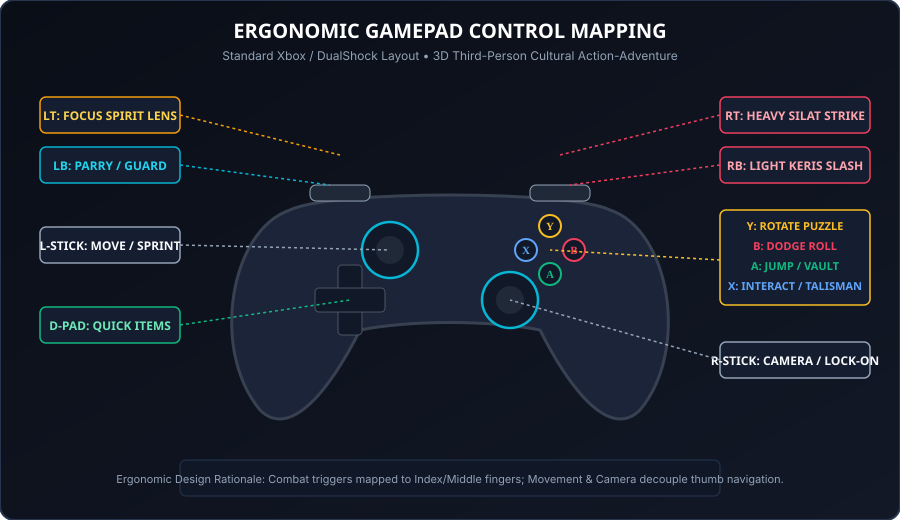
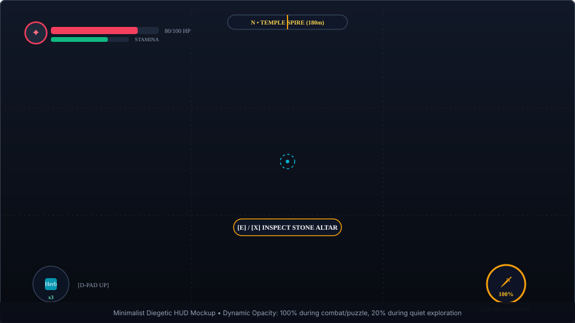

How Our Game Works
Transitioning from our high-level concept into concrete gameplay architecture: behavioral operant conditioning, rewards and penalties, folklore narrative, Wayang puzzle mechanics, sensory feedback, dual-input control schemes, and diegetic UI.
🎯 Practical 002 Lecture Application Matrix
This documentation applies 8 core lecture concepts from Topic 2 and 3: Operant Conditioning, Rewards and Penalties, Narrative Design, Puzzle Design, Feedback Design, Control Schemes, Items & Inventory, and User Interface (UI) Design.
2.1 Operant Conditioning & Behavioral Psychology
Operant conditioning (B.F. Skinner) dictates how player behaviors are learned, strengthened, or extinguished through environmental feedback loops, stimuli, and reinforcement schedules.
Positive Reinforcement (+ Stimulus Added)
When Arya executes a Perfect Parry (timing blade block within 0.18s), the game immediately triggers a resonant metallic chime, a brilliant burst of golden sun sparks, and awards +1 Spirit Shard. This delivers an immediate rush of competence, training players to embrace defensive rhythm.
Negative Reinforcement (- Unpleasant Stimulus Removed)
Corrupted shadow zones subject Arya to a suffocating dark fog, muffled audio, and a continuous stamina regeneration penalty (-40%). Lighting the central ancestral brazier instantly banishes the fog, restores natural vibrant sunlight, and removes the stamina drain, rewarding environmental cleansing.
Positive Punishment (+ Aversive Stimulus Added)
Blindly button-mashing the heavy attack triggers a severe stamina exhaustion stagger (Arya gasps for breath for 1.2 seconds, unable to dodge). During this vulnerable state, enemies unleash heavy unblockable knockback strikes, discouraging thoughtless offense.
Negative Punishment (- Valued Stimulus Removed)
Failing a Wayang shadow alignment puzzle resets the rotating mirror angles, causing the accumulated beam charge to dissipate. While it does not kill the player, it subtracts the momentary time and positional progress, encouraging careful spatial observation.
Four Schedules of Reinforcement
To maintain high intrinsic motivation while preventing predictable player exhaustion, our systems incorporate all four classic reinforcement schedules:
| Schedule Type | Underlying Behavioral Mechanism | Application in Hikayat | Impact on Player Retention & Pacing |
|---|---|---|---|
| Fixed-Ratio (FR) | Reward delivered after a fixed number of completed target actions. | Combo Arts Unlock: Every 5 successful silat counter-attacks fills 1 whole segment of the Keris Celestial Charge bar. | High, predictable response rate. Encourages active mastery of defensive mechanics. |
| Variable-Ratio (VR) | Reward delivered after an unpredictable, varying number of responses (Slot Machine principle). | Ancestral Pottery Loot: Sashing ceramic offering jars yields common clay shards, with an unpredictable 12% probability of discovering rare Batik Talisman Glyphs. | Extremely high, persistent engagement. Drives compulsive spatial exploration of every temple corner. |
| Fixed-Interval (FI) | Reward available only after a fixed time duration has elapsed. | Dawn Meditation Wells: Sacred water shrines refill with healing essence at fixed 10-minute game clock intervals. | Creates a steady pacing cycle; prompts players to retreat to safe zones periodically to regroup. |
| Variable-Interval (VI) | Reward becomes available around an unpredictable average time window. | Wandering Dalang Spirit: The mystical shadow puppeteer appears unexpectedly at jungle waypoints every 15–25 minutes offering cryptic lore blessings. | Prevents complacency; rewards patient world observation without predictable exploitation. |
2.2 Rewards and Penalties Matrix
Every gameplay action directly impacts Arya's immediate physical state, short-term tactical advantages, and overarching game economy progression:
| Player Action / State | Immediate Sensory Feedback | Short-Term Gameplay Impact | Long-Term Economy / Progression Impact |
|---|---|---|---|
| Perfect Timed Parry | Crisp metallic blade clash, golden spark burst, screen camera micro-freeze (0.05s) | Enemy staggered for 2.0s; vulnerability window opened for critical riposte | Earns Spirit Shards used to unlock ancient Silat stance combos at shrines |
| Mistimed Guard (Too Early) | Dull wooden thud sound, blue stamina bar flashes red | Takes 25% chip damage; loses 50% max stamina instantly | Wastes consumable healing herbs if player is forced to recuperate |
| Solving Wayang Shadow Puzzle | Deep Gamelan bronze gong chime, stone lock mechanism animates, light flood | Unlocks sealed sanctum gateway; dispels local shadow aura | Awards unique Ancestral Relic Key permanently progressing Chapter 1 |
| Stamina Depletion (Over-sprint/over-attack) | Muffled heartbeat, Arya visibly panting, movement speed slows by 60% | Cannot dodge, jump, or attack for 1.2 seconds | High risk of fatal hit; enforces disciplined resource management |
| Player Death (HP Reaches 0) | Screen fades to deep indigo shadow smoke; mournful rebab violin string note | Respawn at nearest visited Incense Brazier checkpoint | Retains all solved puzzles and narrative relics; respawns common shadow minions |
2.3 Narrative & Environmental Storytelling
Rather than relying solely on non-interactive cutscenes, Hikayat emphasizes diegetic environmental storytelling, embedding Malaysian folklore directly into the terrain, architecture, and visual props.
The Folklore Premise
Centuries ago, the guardians of the Seven Realms forged the Keris Taming Sari from meteoritic star-iron to channel solar energy and protect Mount Santubong. When an ancient celestial eclipse consumed the mountain, the mythical Garuda was corrupted by shadowy discord, plunging the valleys into perpetual twilight.
The player assumes the role of Arya, a silat apprentice guided by the whispering spirit residing within the dormant blade hilt. To rekindle the solar flame, Arya must seek out the four lost lok (blade waves) scattered across the ancient sanctuary.
Three-Act Game Narrative Arc
- Act I: The Awakening (Village of Permai): Arya unearths the dormant Keris blade during the eclipse; learns basic silat movement and light-focusing; flees the encroaching shadow hound pack.
- Act II: The Trials of Wayang (Sanctuary Ruins): Arya navigates the overgrown temple courtyards, solves the light-and-shadow puppetry chambers, and discovers the tragic corruption of the mountain's guardian spirits.
- Act III: The Solar Solstice (Summit of Santubong): Climactic duel atop the mountain peak against the Corrupted Garuda; purifying the guardian using concentrated solar beams; restoring daylight across the archipelago.
Diegetic Environmental Storytelling Techniques
1. Petrified Stone Warriors
Drawing from the Sang Kelembai myth (a folklore giant whose speech petrifies living beings), ancient warriors are found frozen mid-battle in stone around temple thresholds, warning players of imminent ambushes.
2. Faded Batik Screen Murals
Dilapidated temple walls feature traditional wax-resist batik frescoes that visually illustrate puzzle solutions and lore without breaking game immersion with artificial text popups.
3. Audio Soundscape Transitions
Peaceful areas feature gentle tropical cicadas and bamboo water fountains. As Arya approaches corrupted zones, the ambient soundscape becomes eerie and discordant, accompanied by distorted serunai flute trills.
2.4 Puzzle Design: The Wayang Shadow Caster
Puzzles in Hikayat are built upon the tactile, spatial manipulation of 3D objects, light vectors, and silhouette alignment, directly paying homage to traditional Kelantanese shadow puppetry.
Puzzle Anatomy & Gate-and-Key Structure
In Chapter 1, Zone 3, the path forward is barred by the Gateway of the Garuda, a massive stone door bearing an empty silhouette carving of the celestial bird.
- Light Source Activation: Player focuses Arya's Keris blade to reflect an overhead solar shaft into a central prism brazier.
- Spatial Artifact Rotation: On a stone pedestal stands an asymmetrical, ancient carved bronze idol. Using the interaction controls, the player rotates the artifact along the X and Y axes.
- Silhouette Alignment: The light casts the artifact's 2D shadow onto the translucent white silk screen mounted on the gate. When rotated to the precise 45° angle, the jagged edges align to form the majestic silhouette of the Garuda.
- Gate Unlocking Mechanism: Upon matching, the gate's mechanical weights depress with a bronze gong chime, opening the portal into the final boss sanctum.
Figure 2.1: Real-time shadow projection geometry and alignment tolerance.
2.5 Multi-Modal Sensory Feedback System
Clear, instantaneous feedback across visual, auditory, and haptic channels ensures players never feel confused about game states, impact validity, or danger levels.
| Game State / Action | Visual Channel (Eyes) | Auditory Channel (Ears) | Haptic Channel (Hands / Rumble) |
|---|---|---|---|
| Normal Movement / Stroll | Subtle cloth physics on Arya's sarong; kicked-up dust particles | Soft footsteps varying by terrain (dry stone vs wet jungle grass) | No motor vibration (neutral sensory baseline) |
| Sprint & Vault | Speed lines at screen periphery; camera subtly widens FOV (+5°) | Rhythmic exertion breathing; rapid boot thuds | Subtle left-motor pulse upon landing contact |
| Light Keris Slash | Curved golden arc trail tracing the blade lok | Crisp swoosh; metallic blade whistle | Light high-frequency motor vibration (40ms) |
| Successful Timed Parry | Flash of golden sun flare; micro screen-freeze (3 frames) | Resonant bronze clash; immediate silence of background wind | Sharp, dual-motor heavy pulse (120ms, 100% intensity) |
| Taking Enemy Damage | Vigorous camera shake (trauma = 0.4); red edge flash vignette | Heavy blunt thud; Arya groans; gamelan tempo accelerates | Prolonged low-frequency motor rumble (250ms) |
| Aligning Shadow Puzzle | Golden glyphs on door illuminate progressively | Harmonic gamelan overtone swells in pitch as angle nears 100% | Subtle rhythmic heartbeat rumble when within 10° threshold |
| Critical Health (<25% HP) | Pulsing deep red screen border; desaturated world colors | Low-pass audio filter (muffled world); loud visceral heartbeat | Continuous low-frequency pulse synchronized to heartbeat |
2.6 Control Schemes & Dual-Input Mapping
Our control scheme is engineered around ergonomic finger posture and input priority. Fast combat actions are mapped to shoulder triggers, preserving player thumb dexterity for 360° camera orbit and avatar locomotion.

Figure 2.2: Dual-analog controller mapping architecture indicating combat and interaction zones.
| Gameplay Action | Gamepad Mapping (Xbox / PlayStation) | Keyboard & Mouse Mapping | Ergonomic & Cognitive Design Rationale |
|---|---|---|---|
| Character Movement | Left Thumbstick (Analog 360°) | W, A, S, D | Standard industry convention; allows seamless 8-directional walking and sprinting. |
| Camera & Target Lock | Right Thumbstick (R3 to Lock-On) | Mouse Look / Middle Mouse Click | Decoupled from combat buttons, ensuring players retain full situational sightlines. |
| Light Keris Slash | Right Bumper (RB / R1) | Left Mouse Button (LMB) | Index finger trigger allows rapid rhythmic tapping without lifting thumb from camera stick. |
| Heavy Silat Strike | Right Trigger (RT / R2) | Right Mouse Button (RMB) | Analog trigger resistance provides a tactile sense of weight and charge momentum. |
| Parry & Guard | Left Bumper (LB / L1) | Left Shift (Hold to Guard, Tap to Parry) | Left-hand defensive symmetry mirrors traditional martial stance balance. |
| Focus Spirit Lens | Left Trigger (LT / L2) | F or Mouse Thumb Button | Zooms camera over shoulder for fine aiming of light beams and shadow rotation. |
| Dodge Roll (Langkah Elak) | B Button / Circle | Spacebar or Left Alt | Fast thumb thumb-rock from camera stick to execute quick directional evasion. |
| Jump / Ledge Vault | A Button / Cross | Spacebar | Universal muscle memory standard for 3D platformers and action games. |
| Interact / Rotate Puzzle | X Button / Square (Y for Pitch) | E (Interact) / Q & E (Rotate) | Context-sensitive button prompt appears only when proximate to interactable objects. |
| Quick Item / Healing Herb | D-Pad Up | 1, 2, 3, 4 (Quick Slots) | Prevents accidental consumption during intense combat encounters. |
| Pause / In-Game Journal | Menu / Options Button | Escape or Tab | Brings up folklore codex, level map, and system settings instantly. |
2.7 Items & Inventory Management System
To maintain high game flow, Hikayat avoids cumbersome, immersion-breaking inventory screens. The inventory is divided into a rapid-access 4-slot consumable pouch and an ancestral quest journal.
1. Consumables (Pouch Limit: 5)
- Pegaga Leaf Salve: Restores 40 HP instantly over 1.5 seconds.
- Melati Dew Water: Dispels shadow exhaustion and grants infinite sprint stamina for 15 seconds.
- Incense Ash: Creates a small cloud of smoke that stuns shadow beasts for 3 seconds.
2. Talismans (Equip Limit: 2)
- Pamor Kurung: Increases parry window by +0.04s, assisting players with defensive timing.
- Garuda's Plume: Increases jump distance by 15% and softens landing recovery latency.
- Eye of the Dalang: Emits subtle chime vibrations when proximate to hidden Wayang relics.
3. Quest Artifacts (Permanent)
- Fractured Taming Sari Hilt: The ancestral spirit blade casing.
- Lok Shard 1 (Solar Ember): First blade wave fragment, unlocking light reflection abilities.
- Dalang's Bronze Bell: Acoustic key required to activate resonance water gates.
2.8 User Interface (UI) & HUD Architecture
Our HUD embraces modern diegetic game design (inspired by Ghost of Tsushima and Shadow of the Colossus). Vitality elements fade to 20% opacity during peaceful exploration and smoothly intensify to 100% only during active combat or puzzle manipulation.

Figure 2.3: In-game HUD layout wireframe mapped across a 16:9 viewport ratio.
HUD Layout Elements Rationale
- Top-Left (Vitality Core): Health indicated via a stylized blooming Lotus arc. Stamina is represented by a curved crescent meter beneath it. Keeping these in the upper periphery ensures the center screen remains uncluttered for martial combat telegraphs.
- Top-Center (Cultural Compass Bar): A sleek, floating horizontal compass displaying current cardinal heading and distance in meters to active landmarks (e.g. "Temple Spire - 180m").
- Bottom-Left (Quick Consumables): Displays currently slotted herb and remaining quantity. Only appears when pressing or holding D-Pad.
- Bottom-Right (Keris Spirit Charge): An ornate silhouette of the Keris blade that fills with molten gold energy as Arya lands parries and strikes.
UI Color Psychology & Cultural Typography
● Solar Gold (#F59E0B): Represents ancestral divinity, light power, celestial purity, and active player focus.
● Celestial Cyan (#06B6D4): Used for light reflection beams, puzzle alignment indicators, and spiritual energy.
● Corrupted Crimson (#F43F5E): Conveys shadow miasma, unblockable boss attacks, taking damage, and critical danger.
● Emerald Jade (#10B981): Represents safe zones, healing remedies, and successful puzzle resolution.
➡️ Transitioning into Week 3
With all core rules, operant conditioning schedules, sensory feedback systems, ergonomic controller layouts, and UI mockups finalized, we move to Week 3 (Practical 003) to design the 3D level layout of Mount Santubong, craft the tension pacing curve, balance mathematical combat tuning parameters, and plan production 3D asset budgets.